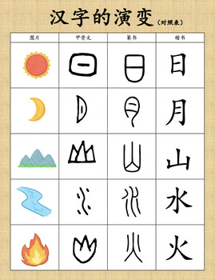
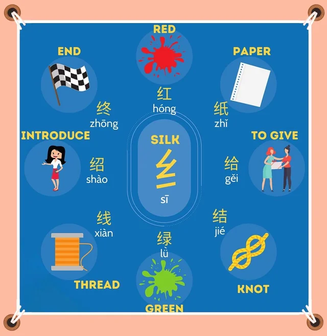
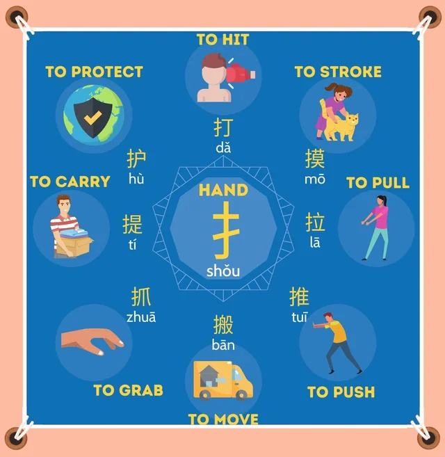

🐉 Willkommen in der Welt der chinesischen Schriftzeichen!
🕰️ Wie sind Hanzi entstanden? （汉字是怎么来的？）
Vor langer, langer Zeit haben Menschen Bilder gezeichnet, um Dinge zu zeigen, zum Beispiel:

Diese Bilder wurden mit der Zeit immer einfacher, und daraus sind Hanzi geworden! So wurde aus einem Bild ein Zeichen, das man schreiben und lesen kann.
🧩 2. Hanzi sind wie Lego!
Ein Hanzi ist oft aus kleineren Teilen gebaut – die nennen wir Radikale (auf Chinesisch: 部首 bùshǒu).
👉 Diese Radikale zeigen oft die Bedeutung oder die Aussprache eines Zeichens.
📚 Insgesamt gibt es über 200 Radikale, aber für Anfänger reichen etwa 40–50 ganz häufige.

